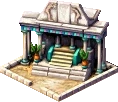
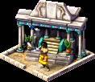
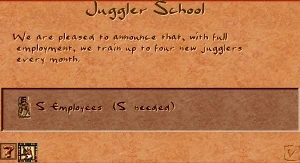

Juggler School


The Juggler School is the training facility that produces jugglers — the most basic entertainers in the city. Trained jugglers walk to a nearby venue (a Booth, Bandstand, or Pavilion) and perform there; if no venue is reachable, a juggler will roam directly from the school instead.
It is the first link in the entertainment chain. Without at least one Juggler School, a Booth has no performers and stays idle — placing a Booth with no school in the city triggers an on-screen warning.
The school is a 2×2 building. Unlike the other training schools it is only mildly undesirable, so it can sit reasonably close to housing without dragging neighbourhood desirability down too far.
Juggler School
- Cost (Normal)
- 50 Db
- Cost by difficulty
- VE 10 · Easy 20 · Normal 50 · Hard 100 · VH 200
- Labor category
- Entertainment
- Trains
- Jugglers
- Supplies
- Booth, Bandstand, Pavilion
- Fire / Damage risk
- Low / Low
Desirability profile
- Peak value
- −3 at the building
- Falloff
- +1 per step (eases toward 0)
- Range
- 3 tiles
Mildly undesirable — the least negative of the training schools, so it tolerates being placed near housing.
Overview
Juggling was a popular street entertainment in ancient Egypt — tomb paintings show performers, often women, tossing balls in intricate patterns. In the game the Juggler School represents the troupe that trains these performers and sends them out to entertain the population.
Entertainment in Akhenaten flows along a chain of buildings: a school trains a performer, the performer walks to a venue, and the venue sends entertainers into the surrounding streets so that houses with road access receive the service. The Juggler School sits at the head of that chain for the cheapest entertainer type, the juggler.
Mechanics
Training jugglers
While the school is staffed it periodically produces a juggler. The juggler looks for the nearest entertainment venue — checked in priority order Pavilion → Bandstand → Booth — and walks there as a destination walker to perform. If no venue is reachable, the juggler instead leaves the school as a roaming entertainer and services houses directly along the way.
Production rate
How often a juggler is produced depends on how fully the school is staffed:
| Workers employed | One juggler every… | Roughly |
|---|---|---|
| 100% | 7 days | ~4 per month |
| 75%+ | 15 days | ~2 per month |
| 50%+ | 30 days | ~1 per month |
| 25%+ | 60 days | 1 every 2 months |
| 1–24% | 90 days | 1 every 3 months |
| 0% | — | nothing produced |
A fully staffed school keeps several venues supplied; a half-staffed one struggles to keep even one Booth performing. Make sure the school has labor access and enough workers in the city.
Info window
Right-clicking the school opens its info window, showing how many workers it employs and its current output of jugglers. Use it to confirm the school is staffed and actively training performers.

Entertainment chain
Juggler School → trains a juggler↳ walks to the nearest
Pavilion / Bandstand / Booth↳ the venue sends a
roaming juggler into nearby streets↳
House → gains entertainment access
Every leg of this journey is on foot and on roads. Keep the school, its venues, and the housing it serves on the same connected road network, or the chain breaks and houses lose entertainment.
Tips
- Always build the Juggler School together with its Booths — the school alone entertains nobody, and a Booth alone has no performers.
- Keep the school well staffed. Under ~50% workers it produces jugglers too slowly to keep multiple venues running.
- Place the school within walking distance of the venues it feeds; a juggler that cannot reach a venue wanders off as a roaming entertainer and may not cover the houses you intended.
- Its desirability penalty is mild (−3, fading over 3 tiles), so it is safe to tuck near housing — but still keep it off your most prestigious avenues.
- One well-staffed school can supply several Booths/Bandstands; spread the venues so coverage does not overlap.
Developer reference
All paths relative to the repository root.
Building config — src/scripts/building/entertainment.js
src/scripts/building/entertainment.js defines building_juggler_school. The cost array is indexed by difficulty (VE · Easy · Normal · Hard · VH); the spawn_delay_* fields set the production rate per worker bracket.
building_juggler_school {
animations { preview { id:46 } base { id:46 } work { ... id:46, offset:1, max_frames:14 } }
spawn_delay_100_percent : 7 // ~4 jugglers/month
spawn_delay_75_percent : 15 // ~2/month
spawn_delay_50_percent : 30 // ~1/month
spawn_delay_25_percent : 60 // 1 / 2 months
spawn_delay_default : 90 // 1 / 3 months (1-24% workers)
building_size : 2
min_houses_coverage : 50
cost [ 10, 20, 50, 100, 200 ]
desirability { value[-3], step[1], step_size[1], range[3] }
laborers[5] fire_risk[4] damage_risk[2]
flags { is_entertainment: true }
}C++ implementation — src/building/building_jugler_school.h / .cpp
src/building/building_jugler_school.h declares building_juggler_school (inherits building_entertainment), registered with BUILDING_METAINFO(BUILDING_JUGGLER_SCHOOL, …). The static_params struct carries the five spawn_delay_* values. Behaviour in building_jugler_school.cpp:
spawn_figure()— picks a spawn interval fromworker_percentage(), then callsfigure_entertainer::determine_venue_destination(road_access, FIGURE_JUGGLER, {BUILDING_PAVILLION, BUILDING_BANDSTAND, BUILDING_BOOTH}). If a venue is found it sends a destination juggler (ACTION_92_ENTERTAINER_GOING_TO_VENUE); otherwise it spawns a roaming juggler (ACTION_90_ENTERTAINER_AT_SCHOOL_CREATED). The cooldownspawned_entertainer_daysgates the next spawn.update_day()— decrements thespawned_entertainer_dayscooldown.update_graphic()— plays the work animation while staffed.
The juggler figure itself is implemented in src/figuretype/figure_juggler.cpp; the entertainment overlay is OVERLAY_BOOTH.